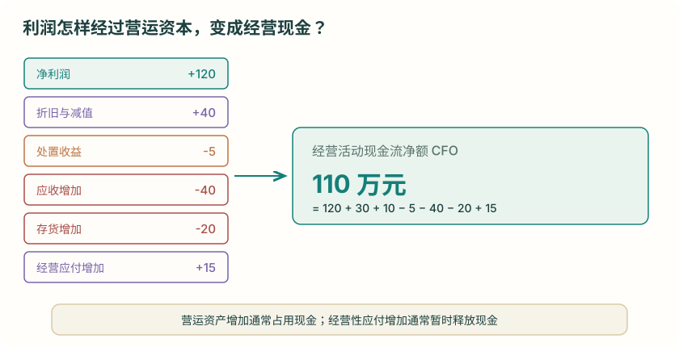
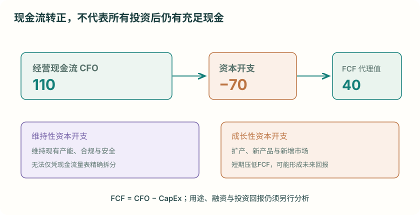

现金流质量分析：从利润桥接到自由现金流
经营现金流高于净利润，不代表企业一定健康；经营现金流低于净利润，也不自动说明利润造假。关键是解释应计项目、营运资本、资本开支和现金流分类。
为什么利润增长，现金却没有跟上？
利润表按照权责发生制确认收入和费用；现金流量表记录报告期现金及现金等价物的流入与流出。两者回答不同问题。赊销可能先确认收入、后续才收款；折旧会减少利润却不直接支付现金；采购存货可能先付款、后续销售才结转成本。因此，利润和经营现金流不可能要求每年完全相等。
现金流分析真正要回答的是：企业的主营经营活动是否持续产生现金？营运资本为什么变化？资本开支是否覆盖长期经营需要？现金是否受限？当期现金改善是否依赖一次性回款、延迟付款或融资安排？

从净利润到经营现金流：读懂调节项目
在间接分析中，可以用下列结构理解经营现金流与净利润的差异：
教学案例（万元）：净利润 120；折旧 30；减值 10；处置收益 5；应收账款增加 40；存货增加 20；经营性应付增加 15；其他调节为零。CFO=120+30+10−5−40−20+15=110。
这并非把每个资产负债表科目的期末减期初机械代入即可。需要排除并购、处置、汇率、非现金重分类和非经营性余额变化，且将经营性应收、存货、应付与现金流量表附注的调节口径对齐。
中国《企业会计准则第31号——现金流量表》要求现金流量分别按经营、投资、筹资活动列报，并要求经营活动现金流量采用直接法列示；附注还需披露净利润调节为经营活动现金流量的信息。IAS 7 则允许经营活动现金流量采用直接法或间接法。两套规则的列报要求不可混为一谈。
现金含量比率：观察趋势，不套统一阈值
常见分析指标包括 CFO/净利润、销售商品和提供劳务收到的现金/营业收入、CFO/资本开支、CFO/流动负债等。它们不是会计准则规定的统一“健康区间”，而是分析者构造的派生指标。
- CFO/净利润：分母为零或接近零时失去解释力；若净利润为负，比例符号尤其容易误导。跨多年时可补充计算累计 CFO/累计净利润，避免单年营运资本波动主导结论。
- 销售收现/营业收入：不能直接要求等于 1。增值税、期初应收、期末应收、合同负债、退款、票据和结算方式都会影响分子与分母。
- CFO/资本开支：说明经营现金流对投资现金支出的覆盖程度，但资本开支的周期性、扩产阶段与维护需求不同。
在案例中 CFO/净利润=110/120≈91.67%。它只说明当期经营现金流略低于净利润；下一步应检查应收增加 40 与存货增加 20 的原因、后续回款和销售情况，而不是将 91.67% 判为“合格”或“不合格”。
自由现金流：一个近似值，不是现金分配承诺
分析中常用的企业自由现金流简化代理值是 CFO 减资本开支（CapEx）。如果 CFO=110、购建固定资产、无形资产和其他长期资产支付现金=70，则简化 FCF=40。这个值表示经营现金流扣除所选投资现金支出后的余额，但并不等于股东可以立即分配的现金。

需要区分：
- FCF 代理值：本文 CFO−CapEx，便于快速分析，但需声明 CapEx 口径。
- FCFF：归属于全部资本提供者的自由现金流，常见估值模型从税后经营利润出发，再调整折旧、资本开支和营运资本；若从 CFO 出发，需按利息现金流列报口径作相应调整。
- FCFE：归属于普通股股东的自由现金流，常见简化关系为 CFO−CapEx+净借款，但也必须核对利息和租赁现金流分类。
在常见估值框架中，FCFF也可以从税后经营利润推导；FCFE则从股东可得现金推导。下面两式的变量必须按同一期间和一致口径计量：
其中 NOPAT=EBIT×(1−适用税率)。FCFE 的 CFO 起点必须先统一利息现金流分类：若利息支付列入融资活动而非经营活动，应先按估值口径重分类或作调整；净借款为借款现金流入减偿还本金现金流出。租赁本金、受限现金及其他融资义务也需按模型定义处理。
资本开支中的维持性与成长性部分通常需要管理层披露、资产状态、产能利用率和项目计划等资料，不能把“折旧金额”直接当作维护性资本开支，也不能把所有 FCF 负值理解为失败。
现金流也需要审查分类、时点与交易实质
现金流量表以现金收付为基础，不代表所有列报都天然免于判断。分析者应关注经营、投资、筹资活动分类是否符合适用准则；现金及现金等价物的口径是否一致；非现金投资和融资交易是否另行披露；期末受限资金是否影响可动用性。
应收账款保理、票据贴现、供应链融资、关联方资金往来和期末集中结算，都可能影响现金流的时点、列报或风险暴露。它们的会计处理取决于合同权利义务、金融资产终止确认条件、追索安排和适用准则，不能一概说“保理一定虚增 CFO”或“现金流不能造假”。
| 观察到的变化 | 可能的正常解释 | 应核查的证据 |
|---|---|---|
| CFO 突然上升 | 应收回款、存货下降、季节性收款 | 银行流水、期后回款、客户确认 |
| 经营应付明显上升 | 采购规模增长、合同账期变化 | 供应商合同、期后付款、供应链融资 |
| 其他经营现金流大幅波动 | 税费返还、保证金、代收代付 | 附注明细、交易对手、资金用途 |
| 投资现金流改善 | 处置资产、收回投资 | 处置协议、对价到账、关联关系 |
现金流桥接与自由现金流工作台
调整假设，即时复算
正数的应收/存货增量表示现金占用，正数的经营性应付增量表示暂时释放现金。案例数据全部为教学虚构，简化桥接不替代完整现金流量表。
尝试把应收增加从 40 调到 80，观察 CFO 和 FCF 同时下降；再把资本开支调高，观察 FCF 如何变化，但不要据此推断项目一定没有价值。
现金流质量审查清单
一份可复核的现金流分析至少应列出：净利润与 CFO 的多年桥接、应收/存货/应付变化、票据与保理安排、现金等价物和受限资金、重大非现金交易、资本开支明细、融资与租赁付款、期后回款和供应商付款。对于跨准则比较，应说明 IAS 7 与中国 CAS 31 在经营现金流列报方式上的差异。
自测：CFO=110、CapEx=70，是否意味着公司可以分红110？
不能。扣除资本开支后，简化 FCF 代理值是 40；此外还需考虑债务偿还、租赁付款、受限现金、必要营运资本和其他承诺。CFO 本身不是可自由分配金额。
结论：现金流质量分析不是寻找一个“神奇比率”，而是把利润、营运资本、投资和融资活动连成可验证的现金路径。
依据与适用边界
本章金额、公司与计算案例均为教学虚构；公式属于分析者使用的派生指标，不是统一法定评价阈值。实际判断须结合报告期、合并范围、会计准则和原始附注。